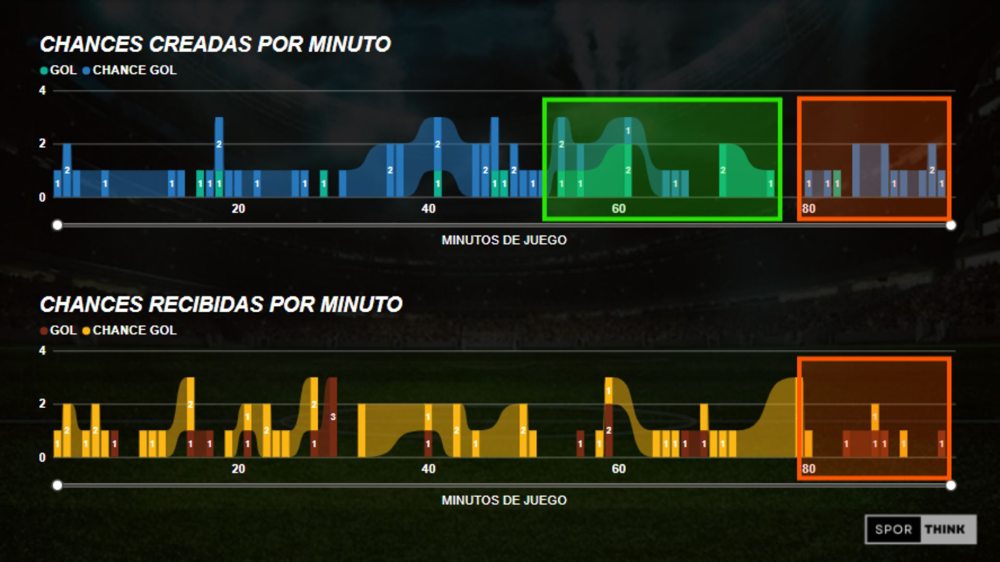

SOFTWARE DE RECOLECCION
Este software, desarrollado en Python con Tkinter, es una herramienta versátil para registrar y analizar eventos durante un partido de fútbol. Ofrece una interfaz amigable con botones personalizables para acciones clave como goles y faltas, y un cronómetro editable que permite un seguimiento preciso del tiempo.
La herramienta también permite editar tiempos y eliminar eventos si es necesario, mostrando toda la información en una ventana de texto que se actualiza en tiempo real. Adaptable y funcional, esta herramienta se convierte en un aliado para recolectar los datos de los aprtidos.

PRIMERAS CONCLUCIONES
El análisis revela que desde el minuto 80 hasta el final del partido, el equipo muestra una gran fortaleza, con una efectividad del 50% en las situaciones creadas y convertidas, destacando que 4 de los 7 goles fueron de remates, lo que sugiere un momento favorable para atacar, especialmente cerca del minuto 85.
Sin embargo, entre el minuto 55 y 75, SPORTING crea situaciones pero con una muy baja efectividad, mientras que los rivales son muy efectivos, lo cual podría deberse a una mala posición defensiva durante los ataques. Se recomienda evitar ataques innecesarios cuando el resultado es favorable o mejorar la calidad de los ataques en este período para evitar exposiciones defensivas.

PROXIMOS PASOS.
Después de la presentación, mi objetivo fue alentar al cuerpo técnico a utilizar este panel como una herramienta valiosa, o como les mencioné, "un punto de vista respaldado por datos históricos".
A partir de que ya se genera la información y conclusiones necesarias, lo siguiente es seguir recolectando y enriqueciendo los datos, y profundizar en el análisis respaldándolo con videos. Por ejemplo, si tomamos los recortes de los ataques sufridos, podemos determinar si cierto equipo ataca más por la banda derecha que por la izquierda.